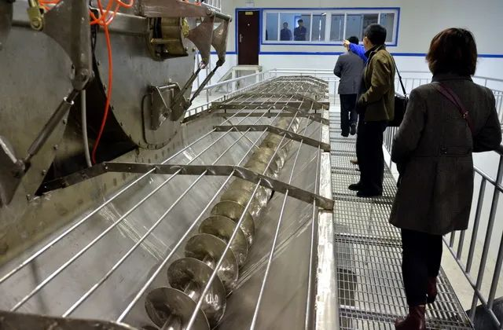
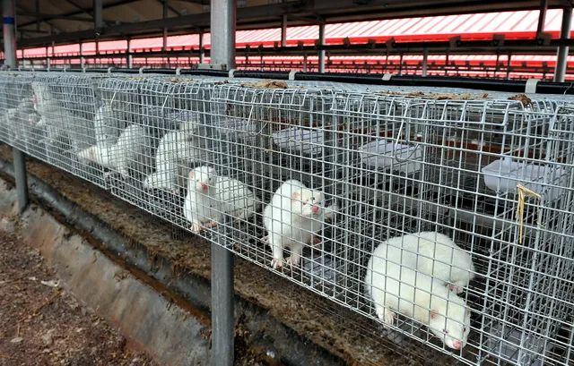

《野生动物保护法》启动修订，专家呼吁不能只保护珍稀濒危而要全面“禁野”
原文链接 备份链接 面临的最大挑战仍然是部门利益藩篱疫情当前之际，2月10日，全国人大常委会法工委表示，已部署启动《野生动物保护法》（下称《野保法》）修改工作，拟增加列入全国人大常委会今年的立法工作计划，并加快动物防疫法等法律的修改进 …
作者 | 第一财经 章轲
水貂、狐狸、貉子的毛皮穿在身上了，肉去哪了？这些野生动物的肉能吃吗？今天（26日），这个问题又有人提出来了。
2月24日召开的十三届全国人大常委会第十六次会议，表决通过了《全国人大常委会关于全面禁止非法野生动物交易、革除滥食野生动物陋习、切实保障人民群众生命健康安全的决定》（下称《决定》）。
《决定》明确，国务院及其有关部门和省、自治区、直辖市应当依据本决定和有关法律，制定、调整相关名录和配套规定。
第一财经昨日刊发了《全面“禁野”后，哪些野生动物还能吃？》的文章后，很快收到了多家机构的回应。
中国绿发会行动亚洲基金发起人苏佩芬对第一财经记者表示，2003年，原林业部公布54种商业性经营利用驯养繁殖技术成熟的陆生野生动物名单中，将水貂、狐狸、貉此类野生动物的养殖列入成功养殖物种。原农业部《中国畜禽遗传资源目录》（2017）也将银狐、蓝狐、水貂，貉等纳入禽畜名单中。这意味着水貂、狐狸、貉等野生动物可以进入食谱上桌。
但是，“从严重急性呼吸系统综合症（SARS）到新型冠状病毒肺炎COVID-19，一个可见的共同点是，此两类疾病都与不当或紧密接触野生动物有关。”苏佩芬说，比照决定第二条和第三条，需要重视那些被纳入《禽畜资源目录》的野生陆生动物，如何对待这些野生动物将成为《决定》能否全面贯彻实施的关键。
苏佩芬介绍，以水貂、狐狸、貉为例，一直以来，相关部门皆将其视为资源，推动皮毛动物的圈养，鼓励将皮毛动物养殖列入促进农村经济发展的一部分。皮草产业被视作一种低成本、高利润的产业。

▲来源：河北某野生动物养殖基地里，水貂、貉子的胴体处理设备。摄影/章轲
公开数据显示，水貂养殖的最大省份为山东省，约占全国水貂取皮总量的71.28%。辽宁省位居第二位，约占17.54%。黑龙江省位居第三位，约占6.19%。
狐狸养殖的最大省份也是山东省，约占全国狐狸取皮总量的40.55%。河北省位居第二位，约占29.09%。辽宁省位居第三位，约占18.33%。三个省份的狐狸取皮数量约占全国狐狸取皮总量的87.97%。
貉子养殖的最大省份为河北省，约占全国貉子取皮总量的66.32%。山东省位居第二位，约占24.85%。黑龙江省位居第三位，约占5.28%。三个省份的貉子取皮数量约占全国貉子取皮总量的96.45%。
中国绿发会等机构的调查发现，存在不法分子将取皮后的水貂、狐狸、貉子肉冒充其他肉品，在食品市场销售的情况。在疑似新型冠状病毒起源的武汉华南市场，在野味餐厅菜单挂板上就公开列有贩售狐狸肉、水貂肉，或是活的水貂。
据第一财经记者查询，中国工程院咨询研究项目《中国野生动物养殖产业可持续发展战略研究报告》（2017年）也介绍，我国毛皮动物每年有几千万只的胴体，产皮高峰年份的2015年貂狐貉毛皮动物的胴体高达9500万个左右，合计大约124万吨，这些动物胴体都让流动商贩收走，有的将其做成肉骨粉饲料，还有一大部分充当别的肉类进入市场上了餐桌，因未检疫，上了餐桌容易引发食品安全问题。
据2013年青岛网络广播电视台“爱青岛”一篇题为《腐臭貂肉用来做火腿肠 民警调查被反跟踪》的报道，“剥了皮的貂肉，隔三岔五的，就有人趁着夜色拉走”“卖给了五莲县的一个非法加工点”。
2014年1月10日中国经济网一篇题为《沃尔玛采购被曝涉利益输送：真假驴肉进价差10倍》的报道称，“刚开始生产商与沃尔玛合作过程中并不敢以狐狸肉代替驴肉，但在合作过程中，生产商发现沃尔玛监管并没有特别严格，后期很多环节形同虚设，生产商为降低成本在驴肉中掺了部分淀粉狐狸肉。”市场上一斤生驴肉价格25元，熟驴肉价格达40元。有业内人士称，若以狐狸肉驴肉代替，进价差至少在10倍以上。

▲来源：山东某地的野生动物养殖场。摄影/章轲
2019年7月，光明网一篇题为《泡面辣条只是“冰山一角”，这些零食伤脾害胃，告诉孩子：不要吃》的报道称，“最便宜的一袋烤肠仅仅才18元，里面却足足有52根，平均一根才3毛钱。”“业内人士爆料，正规一点的造肠厂，会用鸡大胸、鸡皮、鸭皮等做肠，然后用猪肉香精、红曲色素、防腐剂和淀粉增香、上色、填充；还有厂家会用狐狸肉、貂肉做，成本非常便宜”。
毕业于中山医科大学基础医学院的行动亚洲生命关怀教育总监张媛媛对第一财经记者表示，对于被《中国畜禽遗传资源目录》列入的水貂、狐狸、貉来说，在食品安全健康的议题下，关注的不仅仅是被取皮后肉的去向问题，更应该关注人畜共患病的问题。
张媛媛介绍，刊登在中华传染病杂志上的一项新型布尼亚病毒感染住院患者临床回顾性研究发现：68例患者中有22例为貂类养殖史或被貂咬伤史。这68例患者均由威海市文登中心医院经实验室确诊，而文登水貂是山东省威海市文登市特产，被誉为全国农产品地理标志。
研究还发现，水貂不但可以被人流感感染患病，也可以被H5N1型禽流感病毒感染，这也为病毒更进一步的复杂演化提供了机会。此外，水貂还有传染性海绵状脑病、冠状病毒性肠炎、布鲁氏菌病、附红细胞体病等。
“因此，无论是从食用肉类带来的健康问题，还是养殖业的疫病风险，我们都可以看到，将狐狸、水貂和貉等列入《畜禽遗传资源目录》，极其危险。”苏佩芬说，建议相关部门尽快重新审定《畜禽遗传资源目录》，将目录中的水貂、貉、鹿科动物，鸵鸟科、雉科等人工繁育、人工饲养的陆生野生动物移除，以切实保障人民群众生命健康安全。
为避免因交易、食用“野味”导致的公共卫生和健康危机事件重演，中国法学会环境资源法学研究会日前也建议，建立健全列入《人工繁育国家重点保护野生动物名录》的野生动物管理措施，包括人工繁育许可制度、生产专用标识，以及据此出售和利用该种群动物及其制品的可追溯制度。
原文链接 备份链接 面临的最大挑战仍然是部门利益藩篱疫情当前之际，2月10日，全国人大常委会法工委表示，已部署启动《野生动物保护法》（下称《野保法》）修改工作，拟增加列入全国人大常委会今年的立法工作计划，并加快动物防疫法等法律的修改进 …
原文链接 备份链接 28.01.2020本文字数：2678，阅读时长大约4分钟 导读：随着新型冠状病毒的溯源工作的开展，华南海鲜市场几乎被锁定为疫情的源头，尽管该市场关闭前所销售的野生动物目前的去向我们不得而知，武汉官方也未做任何披露。 …
原文链接 备份链接 史上最严禁“野”令，效果如何有待观察 2月24日下午，全国人大常委会表决通过关于全面禁止非法野生动物交易、革除滥食野生动物陋习、切实保障人民群众生命健康安全的决定（下称《决定》），自公布之日起施行。 北京大学保护生 …
原文链接 备份链接 非典疫情以来，科学界和动物保护领域都在呼吁禁止野生动物交易，但以“野味”为代表，近年来交易渠道反而越来越广，从活鲜、农批市场扩大到快手、火山等网络平台，多种野生动物都有从捕猎、运输到贩卖的成熟利益网。问题出在哪里？如何 …
原文链接 备份链接 新冠疫情形势严峻，但非常重要的病毒溯源仍不清晰。 世卫组织的疫情报告显示，越来越多的证据表明，新型冠状病毒与其他已知的在蝙蝠中传播的冠状病毒存在关联，更具体地讲则是和蝙蝠的菊头蝠科存在关联。菊头蝠在中国南方以及整个亚 …